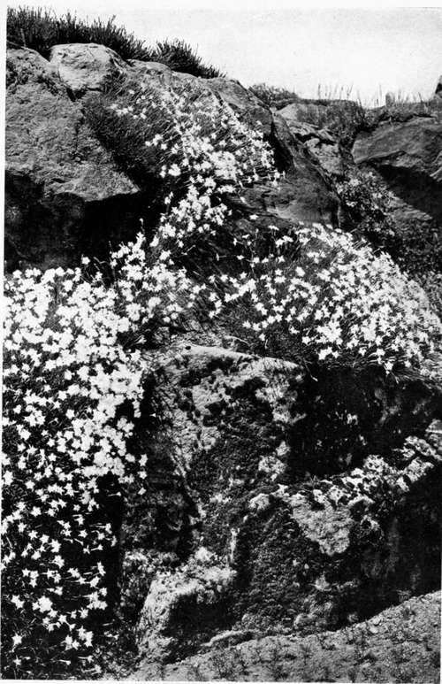

Rock Gardening. Continued
Description
This section is from the book "What England Can Teach Us About Gardening", by Wilhelm Miller. Also available from Amazon: What England Can Teach Us About Gardening.
Rock Gardening. Continued
Or, if you have rocks exposed to full sunshine there is still a good choice, even in a climate that is hot and dry in summer. For three dollars you could have two hundred hardy cacti. (No one would want one thousand cacti, because they are too suggestive of the desert.) There are several stonecrops or sedums which will grow in a pinch of soil on rocks that are so hot you can hardly touch your hands to them. For ten dollars you can have one thousand Sedum album. For twenty dollars you can have one thousand Sedum ternatum, or bloodroot, or moss pink, or bird's foot violet. For twenty-five dollars you can have one thousand scarlet columbine, wild blue phlox, pine barren sandwort, or even American bluebells (Mertensia Virginica). For three or four cents each you can get the dwarf early flags (Iris cristata and verna), bluets, and the thyme-leaved speedwell.
Even in the winter we can make some of the rocky land beautiful, at least when the ground is not covered with snow, by using evergreen ground covers, in which America is very rich. The finest are partridge-berry and wintergreen, because these have red berries that last all winter. Think of getting one thousand plants of partridge-berry for only fifteen dollars! I know one collector who sends them in regular sods, two or three feet square, each sod counting as perhaps a dozen plants. Galax leaves are also a joy in winter, being green in the shade and bronze in the sun. A thousand galax cost forty dollars or less. Prince's pine costs about twenty dollars; Labrador tea only ten dollars. I wish some one would try Hypericum Buckleyi, which is said to be a fine ground cover in shade, and has yellow flowers in summer. It is quite proper to use foreign flowers in wild gardening, provided they look like wild flowers and multiply with little or no care after becoming established. But it is not appropriate to use flowers that have been greatly improved by man, such as large pansies, or anything that suggests ceaseless care and expense. For instance, wallflowers and snapdragons are perennial in England, but here they cannot be relied upon to last over the winter. Therefore they belong in the garden, not the wild garden. The expense of raising flowers every year from seed is not appropriate to wild or rocky land, even if a person can afford it. But annuals that "self-sow" are welcome.
OUR GREAT OPPORTUNITY IS TO CREATE LANDSCAPE PICTURES ON ROCKY LAND BY CLOTHING IT WITH ROCK-LOVING PLANTS, ESPECIALLY AMERICAN ONES. SIR FRANK CRISP'S ROCK GARDEN, FRIAR PARK. See page 6s.
THE RIGHT WAY TO MAKE AN ALPINE GARDEN IS TO DESIGN A PICTURE, USE FEW ROCKS AND MAKE THEM INCONSPICUOUS.
TWO DROUGIIT-RESISTERS THAT WILL GROW IN A PINCH OF SOIL! WOOLLY-LEAVED THYME CLOTHING VERTICAL SURFACES, AND THE WHITE STONFCROP FILLING EVERY CHINK BETWEEN STEPPING-STONES. (Thymus Serpyllum. var. lanuginosns, and SeJnm alburn.) FRIAR PARK. See page 68.
EXAMPLE OF THE PICTORIAL USE OF ROCK-LOVING FLOWERS AS DISTINGUISHED FROM THE COLLECTOR'S SYSTEM OF GROWING THEM IN POCKETS. A CASCADE OF FLOWERS MADE BY RARE PINKS (Dianlhus integer). NOTICE HOW MUCH PRETTIER THE LICHEN-COVERED ROCK IS THAN BARE STONE. FRIAR PARK.
A thousand plants may seem a great quantity to order but two hundred and fifty is not, and two hundred and fifty can usually be had at the rate per thousand, which is a saving of seventeen per cent, over the rate per hundred. We must have some unit, and some very interesting points come out when you study what is actually available by the thousand. I do not approve of any style of wild gardening in which the plants cost more than five cents each, even if a person can afford it. For the best wild gardening costs less than any other style of gardening. All the plants mentioned in this article are hardy perennials, which ought to multiply with little or no care after becoming established, as the whole object of wild gardening is to produce large, permanent colonies such as glorified the woods, rocks, and meadows when the first white men came to this country.
This method of buying plants solves the hardest problem of all, viz., that of expense. For people will not pay as much to develop rocks, woods, and other wild places as for the immediate environment of the house. That is right, too. But the great trouble with American estates is that owners rarely see the necessity of having a comprehensive plan for the development of the whole place. They prefer to start with one or two details. They build a fine house and garden, and when the bill for the latter comes in they exclaim, "Heavens! if it costs this much to treat one little piece of ground what would it cost to develop the whole estate?" So they neglect the wild places, which may fill up with brambles, burrs, poison ivy, or other uncomfortable and ugly features.
The six most popular rock plants in England, as nearly as I can judge, are primroses, pinks, saxifrages, purple rock cress (Aubrie-tia), and the rock roses (Cistus and Helianthemum). Broadly speaking, I believe we can never rely on these for large effects, except in the case of pinks. (See plate 30.) I am rather glad that most of these flowers will not flourish permanently in America, except on a first-class rockery, for no country ought to imitate the landscape effects of a radically different climate. From the list of wild flowers given above I hope we can develop an American style of rock gardening. That style, I believe, must grow out of the following facts: Our summer is hot and dry; summer is our national vacation time; we flock to the mountains and sea-shore, where rocky land is often prominent; and finally, labour is costlier here than in Europe.
But the cheapest and most permanent way to beautify rocky land is not to plant flowers at all. Instead, we should plant trees, shrubs, and vines. These will hold the soil, add to it, give grateful shade and cool greenery, and last a lifetime. A thousand pitch pine seedlings can be collected for twelve dollars. The fitting vines for decorating or obscuring rocks are Virginia creeper, bittersweet, and wild clematis. Among the most precious bushes for rocky land are bayberry, sweet fern, and fragrant sumach, all of which have deliciously scented foliage, so refreshing on a hot day. I need not enumerate a great list, for we have an infallible principle to guide us. Find out every kind of tree and bush that grows wild on your rocky land and in the neighbourhood. Multiply these in every way and make them the bulk of the planting. Gather seeds and make a little nursery of your own. Put soil into every bare pocket. Plant trees wherever there is soil enough to justify the effort. Do not as the people of Nahant, who, amid the ruggedest scenery on the Atlantic coast make lawns and plant cannas, but do as the Misses Loring have done at Pride's Crossing, Mass. Develop the native wildness of the place until it has the richest and most romantic beauty.
And to give the crowning touch to picturesque rock scenery we must use certain little plants like Kenilworth ivy, wall pepper, and New Zealand moss, which have a genius for filling every chink, especially under foot. For these plants give the effect of age, obscure freshly cut surfaces, round off sharp corners, and constantly excite wonder and delight by transforming a mere trowelful of dust into a soft green cushion, pleasant and yielding to the foot.
Haven't you a bit of rocky land that contains some dramatic feature? A spring, a brook, a dripping well? Why not develop a small piece along these lines? And why not have a comprehensive plan for all your rocky land?*
• There are a great many English books containing coloured plates of the flowers of the Alps, and many on rock gardening. Perhaps Robinson's "Alpine Flowers" is as good as any on cultivation. We have no American book on rock gardening. Tourists will enjoy Henshaw's "Mountain Wild Flowers in America" and Brown's "Alpine Flora of the Canadian Rocky Mountains." Students must patiently search out our loveliest mountain flowers with the aid of Britton and Brown, Gray, and Coulter and Nelson's "New Manual of Rocky Mountain Botany".
Continue to:
Tags
garden, flowers, plants, England, effects, foliage, gardening